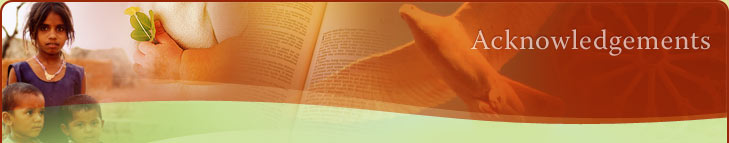

Acknowledgements
Our Lady of Mercy College, Parramatta gratefully acknowledges the contributions of the following individuals and organisations to the development of this resource.
- Adrian Gomez, Pauline Raynor and Qi Wen for preparation of the materials provided.
- Greg Wilson and the Catholic Education Office, Parramatta for guidance and support.
- Rev Wim Hoekstra for theological guidance and comment.
- Fraynework Multimedia for Website design and management.
- NSW Board of Studies for permission to use “Studies of Religion: Stage 6 Syllabus” © 2005, The State of New South Wales (Board of Studies)*
* Sample answers provided in this resource are not endorsed or authorised by the Board of Studies. The Board of Studies takes no responsibility for any errors in the reproduction of the Board materials.
Our Lady of Mercy College, Parramatta has sought to acknowledge the use of any published material in the text of this resource. Any inadvertent omissions in this regard will be corrected upon notification of this error.